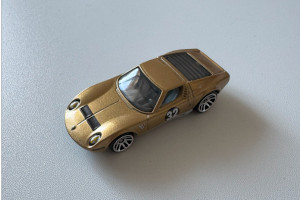

〇 AAAパンケーキ 000円
AppleDeveloperの3Dモデルを使用しています。AppleのObjectCaptureを使用して撮影しているようです。

〇 AAAパンケーキ 000円
AppleDeveloperの3Dモデルを使用しています。AppleのObjectCaptureを使用して撮影しているようです。
〇 ミニカー 000円
AppleのObjectCaptureを使いiphone15proで撮影。必要な部分のみ切り出す方法などがわからないのでまだ無駄が多いですが思ったより高精度。
USDZファイルなのでAndroid用に変換する方法などはまだ要検討。
